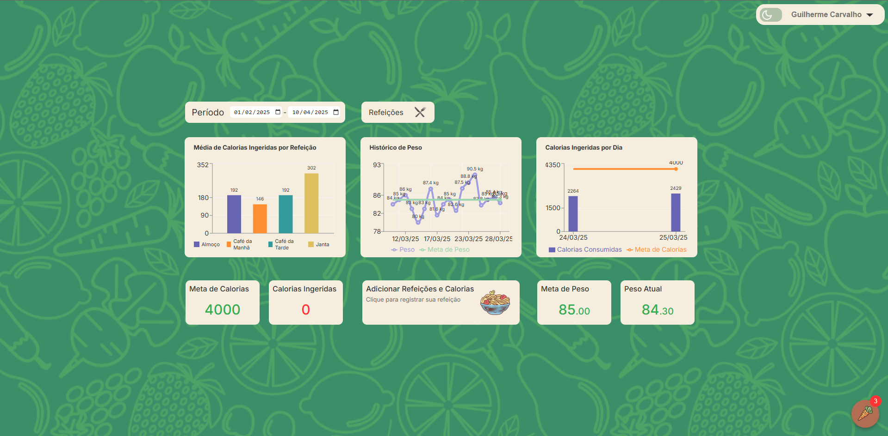
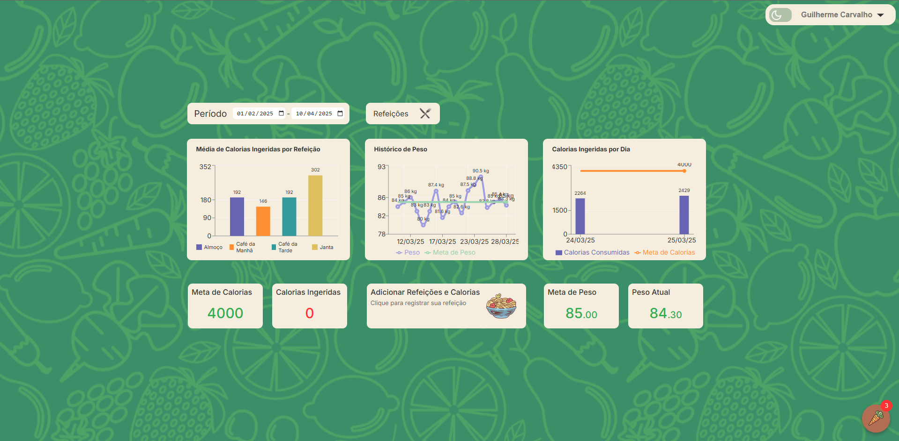

Overview
O LifePlus é um projeto desenvolvido pela nossa equipe com o objetivo de facilitar o controle de calorias e promover hábitos mais saudáveis. A plataforma oferece uma experiência completa e personalizada para quem busca melhorar sua alimentação e alcançar metas nutricionais. Principais funcionalidades:
- Cadastro de refeições: Permite aos usuários registrarem suas refeições e as calorias consumidas.
- Cadastro de refeições: Possibilita cadastrar alimentos com suas respectivas informações nutricionais.
- Edição de dados: Facilita a atualização de refeições e alimentos já cadastrados.
- Gráficos de acompanhamento:Exibe visualizações gráficas que ajudam no monitoramento diário da ingestão calórica.
Além dessas funcionalidades, o LifePlus conta com o apoio de uma Inteligência Artificial, que atua como uma assistente pessoal no controle da dieta. Com base nos dados do usuário, a IA oferece:
- Sugestões de refeições para atingir a meta calórica diária;
- Alertas quando o consumo está abaixo ou acima do ideal;
- Recomendações de dietas, receitas do dia, treinos e até um cardápio semanal completo;
- Tudo isso de forma personalizada, conforme os objetivos e o estilo de vida de cada usuário.
O LifePlus foi pensado para ser uma solução prática, inteligente e acessível, tornando o acompanhamento nutricional mais simples, eficiente e motivador.
Arquitetura e Tecnologias Utilizadas
O desenvolvimento do LifePlus foi dividido em duas principais camadas: back-end e front-end, com foco em segurança, escalabilidade e experiência do usuário.
- Back-end: Estruturado com o padrão MSC, utilizamos Node.js com TypeScript para garantir tipagem segura e organização do código. A autenticação é feita com JWT, e as senhas dos usuários são protegidas com bcryptjs. O banco de dados utilizado é o MongoDB, acessado via Mongoose para facilitar a modelagem e as consultas.
- Inteligência Artificial: Integrada no back-end, nossa IA tem acesso seguro aos dados dos usuários para oferecer sugestões personalizadas de dietas, treinos e receitas. Ela atua como uma assistente de saúde digital, auxiliando na tomada de decisões para uma vida mais equilibrada.
- Front-end: Desenvolvido em React com TypeScript, garantindo uma integração eficiente com o back-end e uma interface moderna e intuitiva. Utilizamos Chart.js para exibir os gráficos de evolução de forma clara e atrativa.
- Base de dados nutricionais: Utilizamos a tabela TACO para garantir informações precisas sobre nutrientes e calorias dos alimentos cadastrados.
- Chat com a IA: Um chat localizado no canto inferior da tela permite que o usuário se comunique diretamente com a Inteligência Artificial, tirando dúvidas e recebendo orientações em tempo real.
- Exportação de dados: Utilizamos a biblioteca xlsx para gerar relatórios em formato Excel, permitindo que os usuários imprimam e compartilhem essas informações com seus profissionais de saúde.
Com essa arquitetura robusta e moderna, o LifePlus oferece uma plataforma completa e inteligente, pronta para transformar a forma como os usuários cuidam da alimentação e da saúde.
 



Tecnologias Utilizadas
- Styled-components
- IA
- React
- TypeScript
- Node
- GitHub
- GIT
- JWT
- MongoDB
- Mongoose
- Figma
- Trello